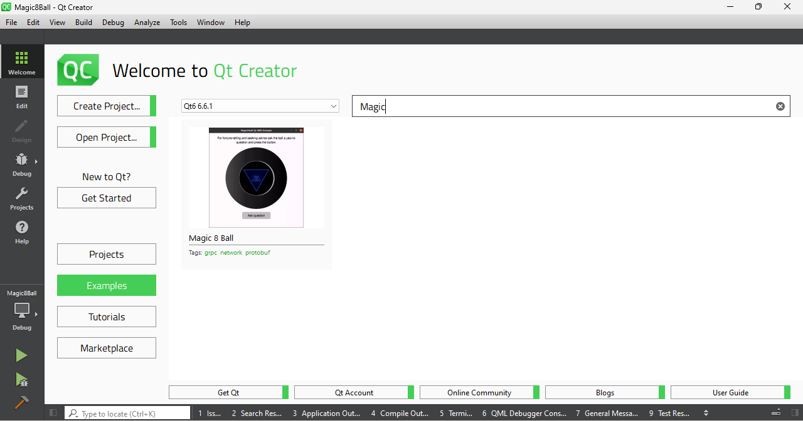
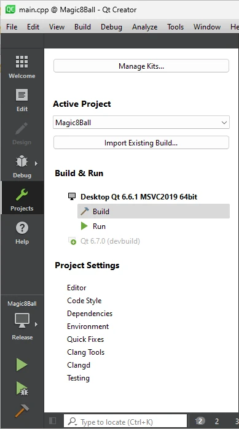
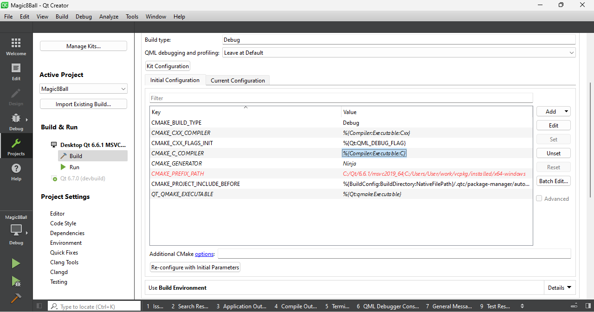

Example of installation for Windows using vcpkg
You can install Protobuf and gRPC packages on Windows using vcpkg.
Note: As an alternative solution, you can build Protobuf and gRPC packages manually. Build instructions can be found for Protobuf and gRPC respectively.
Windows installation prerequisites:
- The vcpkg package manager
- Microsoft Visual C++ compiler
- Qt 6.6 or later, including Additional libraries: Qt Protobuf and Qt GRPC
The vcpkg is a cross-platform C/C++ package manager. You can use the vcpkg for Protobuf, gRPC and its dependencies installation:
.\vcpkg.exe install protobuf protobuf:x64-windows .\vcpkg.exe install grpc:x64-windows
Finally, you can build and execute Qt-based projects with Protobuf and gRPC support. For instance, run Magic 8 Ball from your installed version of Qt. The example requires both packages to be installed, since Magic 8 Ball uses native C++ source code generator plugin for the server part of application. Following steps are required to start Magic 8 Ball example:
- Find Magic 8 Ball in
Examplessection:
- Choose MSVC-based building kit from Qt-creator configuration settings:

- Add the paths to the installed
ProtobufandgRPCpackages to theCMAKE_PREFIX_PATHenvironment variable insideInitial Configurationsettings block:
- Build and Run.